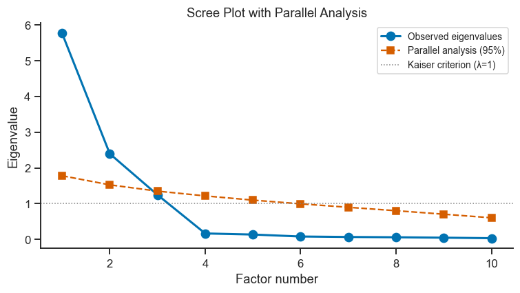
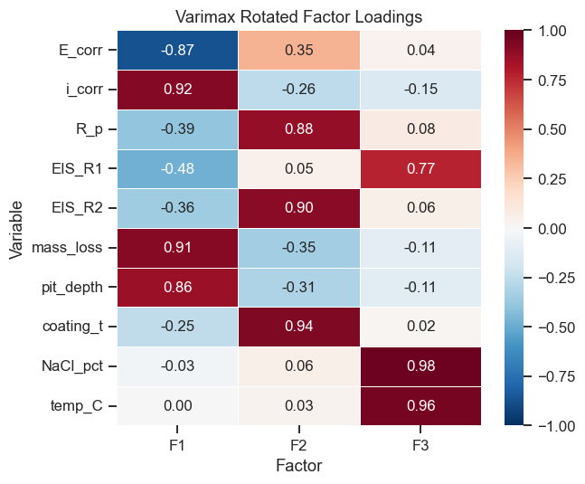
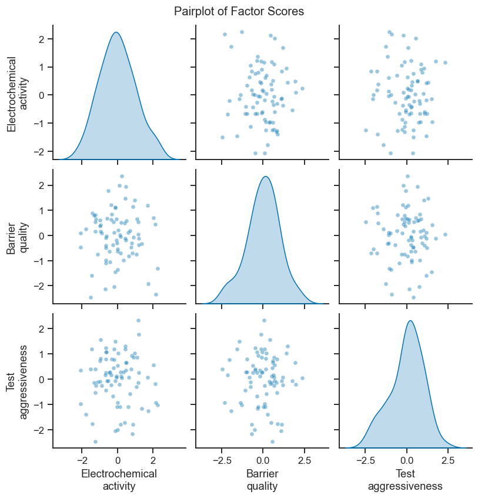

14. Factor Analysis (FA)#
You never directly measure “how electrochemically active a sample is” — you only measure things like corrosion current, mass loss, and pitting depth. But if an underlying property like “electrochemical activity” genuinely exists, all three of those measurements should move together, driven by that one hidden cause. Factor Analysis works backwards from the pattern of correlations between observed variables to recover these hidden (“latent”) common causes:
where \(\boldsymbol{\Lambda}\) (factor loadings) says how strongly each observed variable responds to each hidden factor \(\mathbf{f}\), and \(\boldsymbol{\varepsilon}\) is whatever is left over in each variable that isn’t explained by the shared factors — its own private noise. See Section 5 of the theory page for the full intuition and how this differs from PCA.
Key difference from PCA: PCA maximises explained variance; FA explicitly models the common variance shared among variables and ignores unique variance.
Topics
FA vs PCA: conceptual differences
Determining the number of factors (scree plot, parallel analysis)
Factor loadings and communalities
Rotation: varimax and promax
Interpreting factors
Case study: corrosion test battery data
import warnings
import numpy as np
import pandas as pd
import matplotlib.pyplot as plt
import seaborn as sns
from factor_analyzer import FactorAnalyzer
from factor_analyzer.factor_analyzer import calculate_bartlett_sphericity, calculate_kmo
from sklearn.preprocessing import StandardScaler
# factor_analyzer 0.5.1 (see requirements.txt) internally passes a scikit-learn
# validation kwarg, 'force_all_finite', that sklearn>=1.6 renamed to
# 'ensure_all_finite' -- a harmless library-version mismatch, not a data
# problem. Left unsilenced, the parallel-analysis loop below (Section 14.3)
# calls FactorAnalyzer.fit() 1,000 times and would print this same notice
# 1,000 times, so it is switched off here, specifically, rather than hiding
# warnings in general.
warnings.filterwarnings('ignore', message='.*force_all_finite.*', category=FutureWarning)
sns.set_theme(style='ticks', palette='colorblind')
plt.rcParams.update({'figure.dpi': 110, 'font.size': 11})
rng = np.random.default_rng(37)
14.1 Generate Corrosion Test Dataset#
The dataset contains 10 electrochemical and physical measurements from 80 corrosion tests on a zinc-coated steel in varying NaCl concentration, pH, temperature, and coating thickness:
Variable |
Description |
|---|---|
|
Corrosion potential (mV vs SCE) |
|
Corrosion current density (μA/cm²) |
|
Polarisation resistance (kΩ·cm²) |
|
High-frequency EIS resistance (Ω·cm²) |
|
Low-frequency EIS resistance (kΩ·cm²) |
|
Mass loss after 72 h (mg/cm²) |
|
Max pitting depth (μm) |
|
Coating thickness (μm) |
|
NaCl concentration (%) |
|
Test temperature (°C) |
The dataset is designed so that three underlying factors are present:
Factor 1 — Electrochemical activity (i_corr, mass_loss, pit_depth)
Factor 2 — Barrier quality (R_p, EIS_R2, coating_t)
Factor 3 — Test aggressiveness (NaCl_pct, temp_C, EIS_R1)
n = 80
# Latent factors
f_activity = rng.normal(0, 1, n) # electrochemical activity
f_barrier = rng.normal(0, 1, n) # coating / barrier quality
f_aggressive = rng.normal(0, 1, n) # test aggressiveness
noise = lambda s: rng.normal(0, s, n)
E_corr = -500 - 30*f_activity + 10*f_barrier + noise(12)
i_corr = 20 + 8*f_activity - 2*f_barrier + noise(2)
R_p = 100 - 20*f_activity + 35*f_barrier + noise(8)
EIS_R1 = 15 - 2*f_activity + 3*f_aggressive + noise(2)
EIS_R2 = 200 - 30*f_activity + 60*f_barrier + noise(15)
mass_loss = 3 + 1.5*f_activity - 0.5*f_barrier + noise(0.3)
pit_depth = 80 + 25*f_activity - 8*f_barrier + noise(10)
coating_t = 15 - 2*f_activity + 5*f_barrier + noise(1)
NaCl_pct = 2 + 0.8*f_aggressive + noise(0.2)
temp_C = 35 + 6*f_aggressive + noise(2)
df_corr = pd.DataFrame({
'E_corr': E_corr,
'i_corr': i_corr,
'R_p': R_p,
'EIS_R1': EIS_R1,
'EIS_R2': EIS_R2,
'mass_loss': mass_loss,
'pit_depth': pit_depth,
'coating_t': coating_t,
'NaCl_pct': NaCl_pct,
'temp_C': temp_C,
})
print(df_corr.describe().round(2))
E_corr i_corr R_p EIS_R1 EIS_R2 mass_loss pit_depth \
count 80.00 80.00 80.00 80.00 80.00 80.00 80.00
mean -497.08 18.81 102.23 15.21 205.67 2.82 75.32
std 34.07 8.53 34.25 4.05 57.16 1.57 26.00
min -600.88 1.74 -2.35 5.87 27.51 -0.06 23.54
25% -517.67 12.71 80.40 12.77 170.34 1.69 59.00
50% -496.44 18.68 97.61 15.69 210.01 2.77 76.05
75% -471.89 23.50 129.80 18.16 248.79 3.83 93.20
max -426.52 42.43 176.20 23.29 339.76 7.56 133.24
coating_t NaCl_pct temp_C
count 80.00 80.00 80.00
mean 15.14 1.98 34.54
std 4.45 0.83 6.20
min 3.81 0.01 19.63
25% 12.46 1.51 31.99
50% 15.44 2.10 35.45
75% 18.45 2.58 39.81
max 25.11 3.98 45.45
14.2 Suitability Checks#
FA only makes sense if the variables actually share enough common variance to begin with — if all ten measurements were essentially independent of each other, there would be no hidden common factor to recover, and FA would just be fitting noise. Two checks confirm there’s enough shared structure before proceeding:
Bartlett’s sphericity test: tests \(H_0\) = “the correlation matrix is essentially an identity matrix” (i.e. all variables are uncorrelated). You want to reject this — a significant result (small p-value) confirms the variables are correlated enough for FA to be meaningful.
Kaiser-Meyer-Olkin (KMO) measure of sampling adequacy: roughly, “how much of the correlation between variables is likely to reflect real shared factors, versus noise?” > 0.6 acceptable, > 0.8 good.
chi_sq, p_val = calculate_bartlett_sphericity(df_corr)
kmo_per_var, kmo_overall = calculate_kmo(df_corr)
print(f'Bartlett sphericity: χ² = {chi_sq:.2f}, p = {p_val:.4f}')
print(f'KMO overall: {kmo_overall:.3f}')
print(f'KMO per variable:\n{pd.Series(kmo_per_var, index=df_corr.columns).round(3).to_string()}')
Bartlett sphericity: χ² = 1145.33, p = 0.0000
KMO overall: 0.852
KMO per variable:
E_corr 0.938
i_corr 0.874
R_p 0.904
EIS_R1 0.874
EIS_R2 0.842
mass_loss 0.858
pit_depth 0.944
coating_t 0.801
NaCl_pct 0.661
temp_C 0.665
Take-home message
Both checks pass comfortably: Bartlett’s p≈0 confirms the ten variables are far from uncorrelated (there is real shared structure to factor), and KMO=0.852 clears even the stricter “good” threshold of 0.8, not just the 0.6 minimum — this dataset is well suited to FA.
Every per-variable KMO sits between 0.66 and 0.94, with
NaCl_pct(0.661) andtemp_C(0.665) the weakest — both still acceptable, but notably lower than the electrochemical measurements. That is a hint, confirmed in Section 14.4, that these two share strong information with each other but somewhat less with the rest of the variable set.
14.3 Number of Factors — Scree Plot and Parallel Analysis#
# FA without rotation to see eigenvalues
fa_full = FactorAnalyzer(n_factors=10, rotation=None)
fa_full.fit(df_corr)
ev, v = fa_full.get_eigenvalues()
# Parallel analysis: eigenvalues from random data (95th percentile)
n_sims = 1000
rand_ev = np.zeros((n_sims, len(ev)))
for s in range(n_sims):
rand_data = rng.normal(0, 1, df_corr.shape)
fa_rand = FactorAnalyzer(n_factors=len(ev), rotation=None)
fa_rand.fit(pd.DataFrame(rand_data, columns=df_corr.columns))
rand_ev[s] = fa_rand.get_eigenvalues()[0]
parallel_thresh = np.percentile(rand_ev, 95, axis=0)
fig, ax = plt.subplots(figsize=(7, 4))
ax.plot(range(1, len(ev)+1), ev, 'bo-', lw=2, ms=8, label='Observed eigenvalues')
ax.plot(range(1, len(ev)+1), parallel_thresh, 'r--s', lw=1.5, ms=7,
label='Parallel analysis (95%)')
ax.axhline(1, color='gray', ls=':', lw=1, label='Kaiser criterion (λ=1)')
ax.set_xlabel('Factor number')
ax.set_ylabel('Eigenvalue')
ax.set_title('Scree Plot with Parallel Analysis')
ax.legend(fontsize=9)
sns.despine(ax=ax)
plt.tight_layout()
plt.show()
print('\nEigenvalues:', ev.round(3))

Eigenvalues: [5.762 2.394 1.245 0.167 0.137 0.082 0.069 0.061 0.049 0.034]
Take-home message
The eigenvalues drop sharply after the third: 5.76, 2.39, 1.25, then 0.17 — a clean cliff, not a gradual taper. All three of the first eigenvalues clear both the Kaiser criterion (>1) and the parallel-analysis threshold, while the fourth (0.17) is nowhere close to either — an unusually unambiguous case for “how many factors,” which makes sense given this dataset was deliberately built from exactly three latent causes (Section 14.1).
Interpreting the Scree Plot and Parallel Analysis#
Parallel analysis is the gold standard for choosing the number of factors. Keep factors whose observed eigenvalue (blue circles) lies above the simulated random-data threshold (red dashes). In this corrosion dataset the threshold clearly supports retaining three factors.
Kaiser criterion (λ = 1) tends to over-factor. Use it only as a secondary guide.
Eigenvalue elbow — the point where the curve ‘bends’ also suggests the number of meaningful factors. Factors beyond the elbow explain little more than noise.
14.4 Factor Analysis with Varimax Rotation#
n_factors = 3
fa = FactorAnalyzer(n_factors=n_factors, rotation='varimax')
fa.fit(df_corr)
loadings = fa.loadings_
communalities = fa.get_communalities()
factor_names = [f'F{i+1}' for i in range(n_factors)]
load_df = pd.DataFrame(loadings, index=df_corr.columns, columns=factor_names)
load_df['Communality'] = communalities
print('Factor Loadings (varimax rotated):')
print(load_df.round(3).to_string())
Factor Loadings (varimax rotated):
F1 F2 F3 Communality
E_corr -0.871 0.349 0.044 0.882
i_corr 0.922 -0.265 -0.145 0.941
R_p -0.391 0.877 0.079 0.928
EIS_R1 -0.484 0.052 0.767 0.825
EIS_R2 -0.356 0.901 0.056 0.942
mass_loss 0.912 -0.349 -0.108 0.965
pit_depth 0.864 -0.305 -0.110 0.852
coating_t -0.254 0.937 0.018 0.944
NaCl_pct -0.034 0.057 0.982 0.968
temp_C 0.001 0.035 0.957 0.917
Take-home message
The loadings recover the three intended factors almost exactly as designed: F1 loads strongly on
i_corr(+0.92),mass_loss(+0.91), andpit_depth(+0.86) withE_corrswinging opposite (−0.87) — all the electrochemical activity variables, and nothing else. F2 loads oncoating_t(+0.94),EIS_R2(+0.90), andR_p(+0.88) — barrier quality. F3 loads onNaCl_pct(+0.98) andtemp_C(+0.96) — test aggressiveness;EIS_R1, also designed to belong to F3, is the one variable that doesn’t come through as cleanly (see below).Every variable’s loading on its “own” factor is well above 0.85 except
EIS_R1, whose loading on F3 is only +0.77 — its cross-loadings still stay small (F1=−0.48, F2=+0.05), so it isn’t being pulled toward a different factor, it’s just a noisier read of test aggressiveness thanNaCl_pctortemp_C. That traces directly back to how it was generated (Section 14.1):EIS_R1 = 15 − 2·f_activity + 3·f_aggressive + noise(2)genuinely mixes in a realf_activitycontribution, unlikeNaCl_pctandtemp_C, which depend onf_aggressivealone — varimax can sharpen a loading, but it can’t remove a dependency that was actually built into the data.Communalities are all ≥ 0.82 (
EIS_R1lowest at 0.825), meaning the three common factors explain the large majority of every variable’s variance — very little is left over as variable-specific noise, again consistent with how cleanly this teaching dataset was constructed.
# Loading heatmap
fig, ax = plt.subplots(figsize=(6, 5))
sns.heatmap(load_df[factor_names], annot=True, fmt='.2f',
cmap='RdBu_r', center=0, vmin=-1, vmax=1,
linewidths=0.5, ax=ax)
ax.set_title('Varimax Rotated Factor Loadings')
ax.set_xlabel('Factor')
ax.set_ylabel('Variable')
plt.tight_layout()
plt.show()

Interpreting the Factor Loading Heatmap#
The heatmap shows the correlation between each observed variable (rows) and each latent factor (columns) after varimax rotation:
Large positive loading (deep red, ≈ +1) — the variable increases strongly with this factor.
Large negative loading (deep blue, ≈ −1) — the variable decreases as this factor increases.
Near-zero loading (white) — the variable is essentially unrelated to this factor; it is explained by another factor or by unique variance.
Varimax rotation rotates the loading matrix so that each variable loads high on as few factors as possible. This makes factors easier to interpret as distinct latent constructs.
Communality (rightmost column) is the fraction of each variable’s variance explained by all retained factors combined. Low communality (< 0.40) suggests a variable is mostly unique variance and carries little shared information.
Naming factors — assign a meaningful label to each factor based on the cluster of variables with high loadings. Here: F1 ≈ electrochemical activity, F2 ≈ barrier quality, F3 ≈ test aggressiveness.
14.5 Factor Scores and Interpretation#
factor_scores = fa.transform(df_corr)
score_df = pd.DataFrame(factor_scores, columns=['Electrochemical\nactivity',
'Barrier\nquality',
'Test\naggressiveness'])
# Pairplot of factor scores
g = sns.pairplot(score_df, diag_kind='kde', plot_kws={'alpha': 0.4, 's': 20})
g.fig.suptitle('Pairplot of Factor Scores', y=1.02)
plt.show()
# Variance explained
var_df = pd.DataFrame(fa.get_factor_variance(),
index=['SS Loadings', 'Proportion Variance', 'Cumulative Variance'],
columns=factor_names)
print('\nVariance explained:')
print(var_df.round(3))

Variance explained:
F1 F2 F3
SS Loadings 3.766 2.873 2.524
Proportion Variance 0.377 0.287 0.252
Cumulative Variance 0.377 0.664 0.916
Take-home message
The three factors split the variance almost evenly (37.7% / 28.7% / 25.2%, summing to 91.6%) — unlike PCA, where PC1 typically dominates, FA’s rotated factors are not meant to be ranked by importance; varimax explicitly redistributes variance to make each factor equally interpretable rather than preserving a single dominant axis.
Exercises#
Rotation comparison: Re-run FA with
rotation='promax'(oblique rotation, allows correlated factors). Compare the loading heatmap with varimax. Are the factors correlated in the promax solution?4-factor solution: Re-run FA with
n_factors=4. Check the communalities — does the extra factor improve them substantially, or does it represent noise?Regression with factor scores: Use the three factor scores as predictors in an OLS regression to predict
mass_loss. Do the regression coefficients confirm the interpretation of the factors?